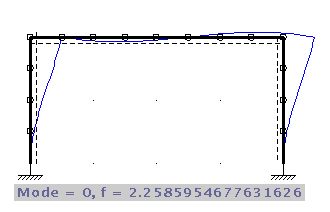

| previous | Contents |
In addition to the static analysis of displacements and stress resultants JBeam also supports a modal analysis of the system. You get eigenfrequencies and eigenmodes as a result.
In modal analysis the lumped mass method is used. This is no longer an exact calculation but only an approximation converging to the exact solution using h-adaption.
For the practical use this means you have to subdivide longer beams into several elements. You should perform at least two calculations at different refinement levels and compare the results to get an idea of the reached accuracy.

The first eigenmode of a frame is calculated using to
refinement levels. The eigenfrequencies of both calculation
do not differ very much (2.24 vs. 2.26 Hz).
To determine higher eingenmodes you will need more refinement.
The problem description input is analogous to static analysis. You should not put any loading on the system. The mass of the elements can be set in the corresponding dialogues in the same way as for sectional values.
To (re)calculate use 'Results - modal analysis'.
Displacements and stress resultants for the different eigenmodes can be displayed in arbitraty scalings in the same way as for static analysis.
You can animate the displacement figure using 'Results - animate mode'.
Use 'Results - show next mode' and 'previous mode' two switch between the desired eigenmodes. Number and frequency of the current eigenmode is displayed in the status line.
| back | Contents |